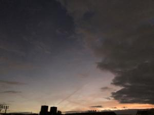
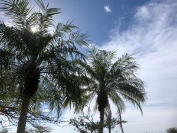
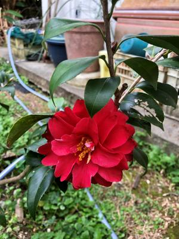

うるがいの話 ある日
最新: 一番古い記憶【うるがいの話 ある日】とは 一日だけのプログです
『うるがいの話』の最新一日だけのプログで、通信料が少なく経済的だ。カニの画像をクリックすると全ての日付が載る『うるがいの話』サイトを表示します
|
|
【うるがいの話】 うるがい(ｳﾙｶﾞｲ urugai)とは、『もずくがに』の名前でとても大きくなります。 |
|---|---|
|
|
【カミマヤーの話】 猫のことを方言でマヤーといいます。カミマヤー（kamimayaa）とは、神の猫のことです。 |
|
【たながぁの音楽】 たながぁ（ﾀﾅｶﾞｰ tanagaa）とは手長えびのことで、何種類かあり大きいのは車 エビぐらいになります。 |

|
【ぶながぁの話】 ぶながぁ(ﾌﾞﾅｶﾞｰ bunagaa)とは、赤い髪の毛、赤い身体、そして身長は１ｍ２０ｃｍ ぐらい、川の蟹を食べているの目撃された。場所は沖縄県国頭郡大宜味村のと ある村僕の隣近所に住んでいる爺さんから、聞いた話です。 |
|
|
【ギーマの話】 ギーマ(giima)とは、山原の里山に咲くスズランに似た、 花を付けます。実は食べられます、 気が付くと口の周りが紫になっています。 |
2023年02月20日 (月）一番古い記憶
15:28
  
深夜３時、起きる。あれ？、県立図書館の延長の操作はしたっけ？、気になり
眠れない。パソコンで確認すると延滞！となっている、ハー。ケアレ、雑の連
続である。眠れないので、そのまま本『藤沢周平とっておき十話 藤沢周平／
著』を読む。いま、教員の過激労働で問題になっているが、
１９７４年(昭和４９年)１０月、友人・小野寺茂三氏あての手紙に、「教師は
労働者」だと多忙さが肉体労働に等しいと訴えている。
昔から大変な仕事だったのかと改めて思う。そして、５歳の頃のお母さんの記
憶が載っていた。さて、私の一番古い記憶は、まだ実家に住む前、海岸に近い
小さい民家（当時は、５８号線もとの一号線は無く、モクマオウの木がある砂
浜の近くにあるほぼ小屋に近い家）で、かまどの前でたたずむ母親を、米軍が
払い下げたカーキ色の毛布にくるまって見ていた記憶である。少なくとも幼稚
園に上がる前だったと思うが、母親にそのことを話すと確かにその民家に住ん
でいたけどよく覚えているねと言われた。少なくとも幼稚園に行く前だから３
～４歳頃か。
１５時２２分 ビットコインの総資産 ￥９、５０１（↓６１）